专题06 线段相关解答题分类训练（6种类型48道）

考点01 补全证明过程
考点02 中点相关线段的运算
考点03 探究线段数量关系
考点04 比例相关线段的运算
考点05 线段相关动点定值问题
考点06 线段相关动点存在性问题

考点01 补全证明过程
1．如图，点
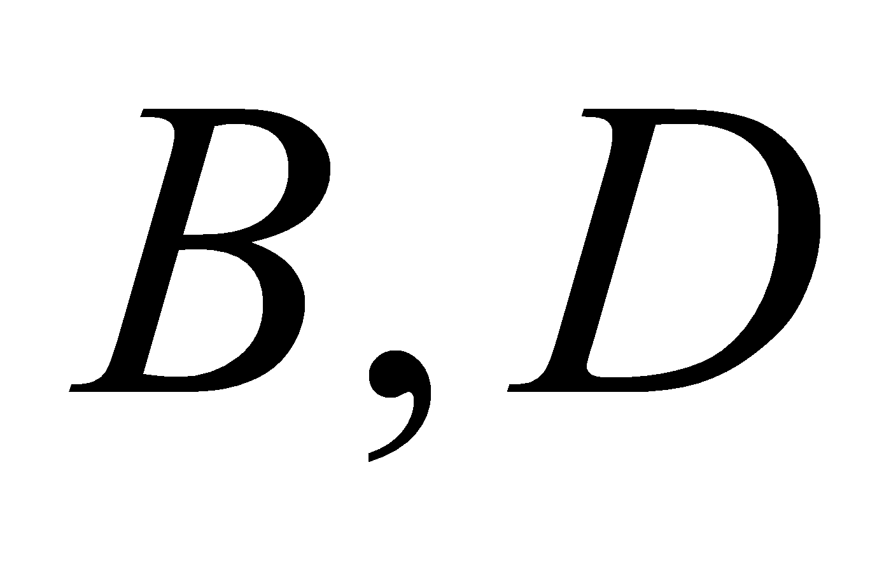
在线段 上，且
上，且 ，
， 是的中点．若
是的中点．若 ，补全下面求
，补全下面求 的长的解答过程：
的长的解答过程：
解：因为，，
所以 __________
__________ ，
，
所以 __________
__________ __________．
__________．
因为是的中点，
所以 __________，
__________，
所以 __________．
__________．
2．根据题意，补全解题过程（每空只能填一条线段或一个数）
已知点为线段 的中点，点
的中点，点 在线段上．如图，若，点
在线段上．如图，若，点 为
为 中点，
中点，
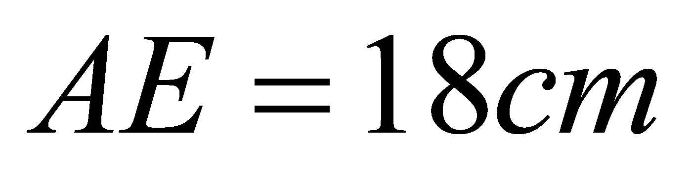
，求线段 的长．
的长．
解：∵点是的中点，
∴ ，
，
∵点为中点，
∴
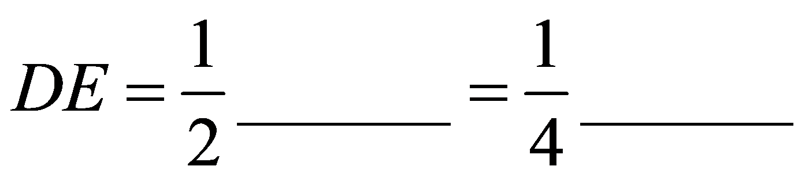
，∴
∵ ，
，
∴______ ，
，
∴
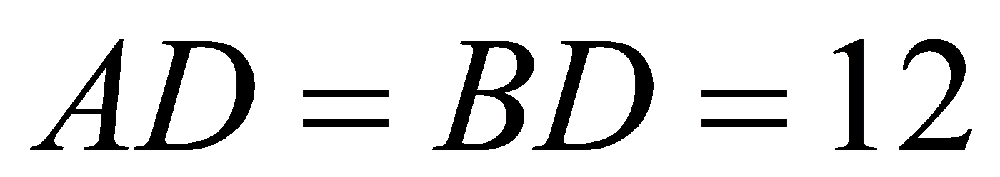
，又∵，
∴ ，
，
∴ ．
．
3．如图，点C、D在线段 上，
上， ，
， ，为线段
，为线段 的中点．求线段
的中点．求线段 的长，补全下面过程
的长，补全下面过程
(1)求线段的长，补全下面过程
∵ ，
，
∴ ________=________
________=________
∵D为线段的中点
∴
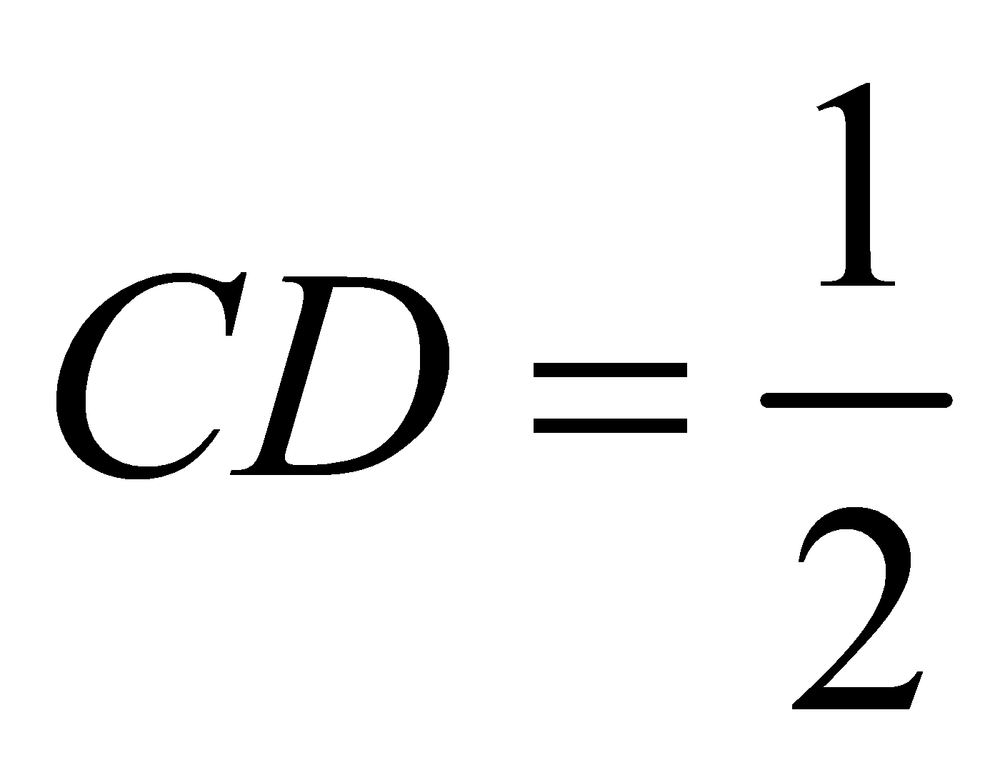
________=________(2)若点E是直线上一点，且 ，则线段的长为________．
，则线段的长为________．
4．补全解题过程：
已知：如图，点在线段上，且 ，点和点
，点和点 分别是线段、的中点，，求线段的长．
分别是线段、的中点，，求线段的长．

解： 点是线段的中点，，
点是线段的中点，，
 ．
．
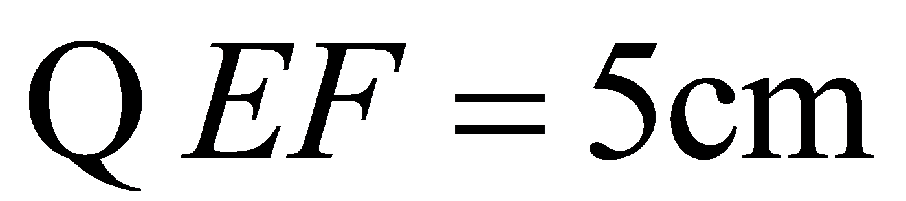
，．

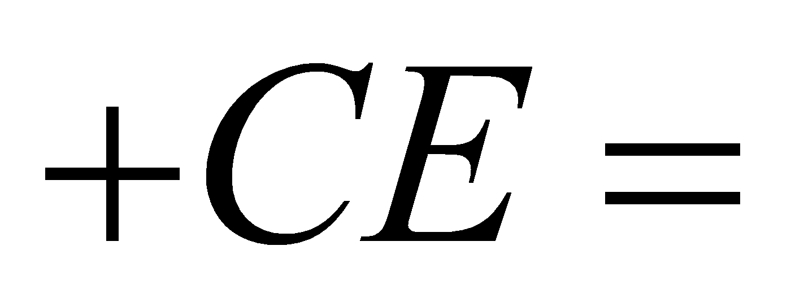
．点是线段的中点，
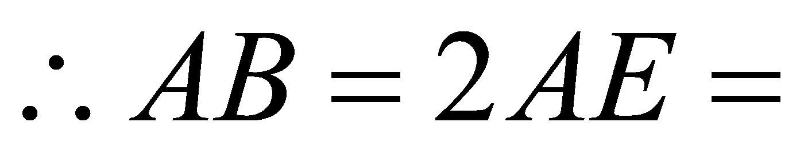
．5．如图，点 在线段上，
在线段上， ，
， ，为线段
，为线段 的中点．
的中点．

(1)求线段 的长，补全下面过程
的长，补全下面过程
∵  ，
，
∴
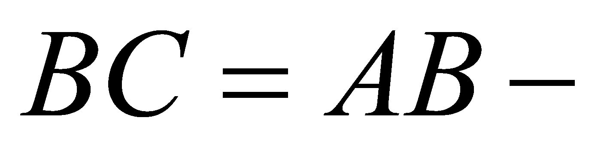
∵ 为线段的中点
∴ （理由： ）
(2)若点是直线上一点，且，则线段 的长为 ．
的长为 ．
6．如图，点 ，在线段上，且，是的中点．
，在线段上，且，是的中点．
(1)若，补全下列求的长的解答过程；
解：因为 所以 所以 因为 所以 所以 |


(2)直接写出是的多少倍．
7．初一学生小石在学习完直线、射线、线段之后遇到了这样一道题：如图，点
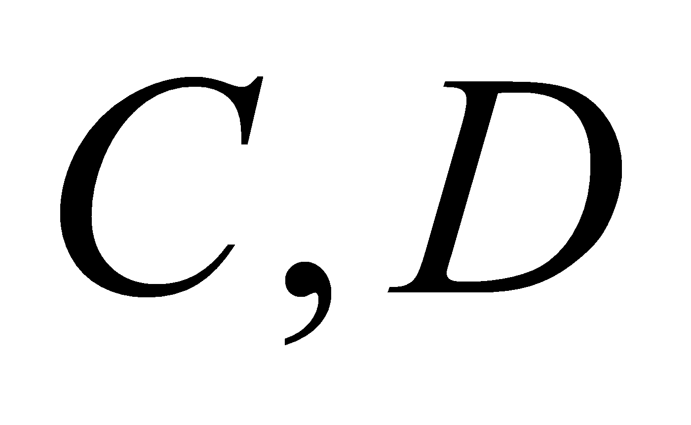
是线段上的点，， ，点是线段
，点是线段 的中点，
的中点， ，求线段的长．下面是他的解题过程，但是过程中有些地方他不能确定，请你帮他补全解题过程．
，求线段的长．下面是他的解题过程，但是过程中有些地方他不能确定，请你帮他补全解题过程．
解：设 ．
．
，，
 ，______
，______ ．
．
 ______
______ ，
，
 ______．
______．
点是线段的中点，
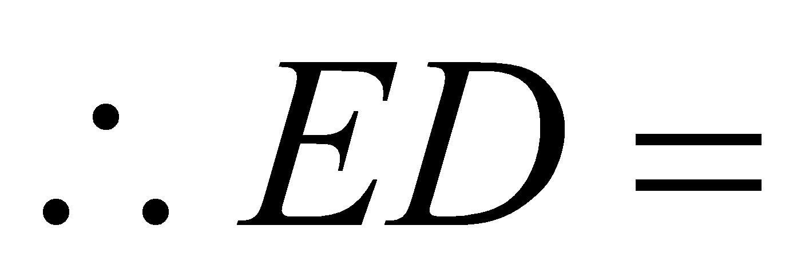
______（理由：______）．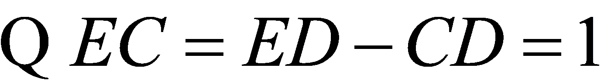
，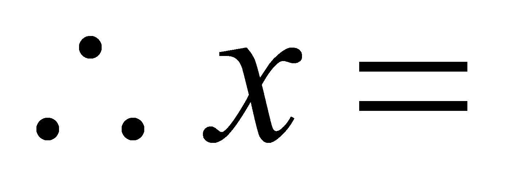
______．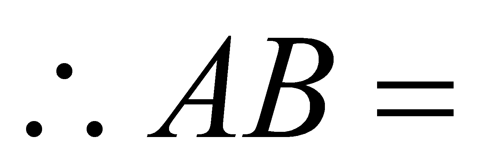
______．8．补全解答过程
如图，线段 ，线段
，线段
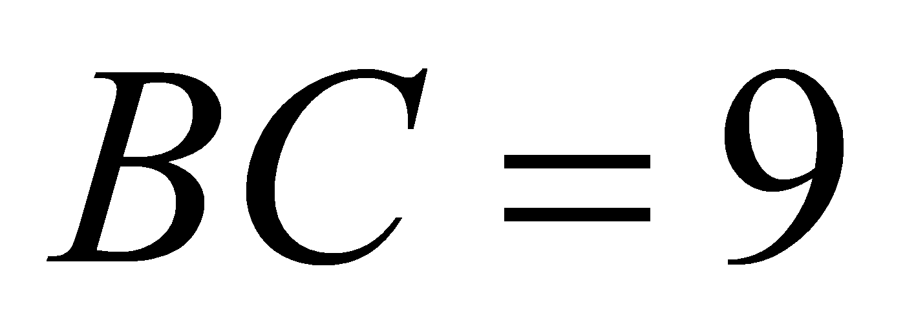
，点 是的中点，在
是的中点，在 上取一点N，，求
上取一点N，，求 的长．
的长．解：∵M是的中点，
∴ ________，
________，
∵，
∴ ________，
________，
∵，，
∴ ________________，
________________，
∴ ________
________ ________
________ ，
，
∴的长为5．
考点02 中点相关线段的运算
9．如图，为线段上一点，点为的中点，且 ，
， ．
．
(1)图中共有______条线段？
(2)求的长；
(3)若点在直线上，且
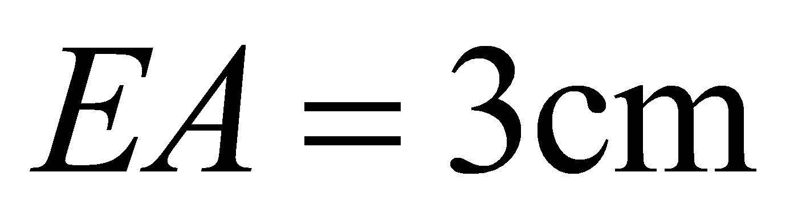
，求 的长．
的长．10．如图，线段上有一点C，D为线段的中点，E为线段上一点，， ，
， ，求：
，求：
(1)的长；
(2) 的长．
的长．
11．如图，已知点为线段上一点， ，
， ，、分别是、的中点，求的长．
，、分别是、的中点，求的长．

12．如图，已知线段 ，延长至C，使得
，延长至C，使得 ，D是的中点．
，D是的中点．

(1)求的长；
(2)若F是的中点，E是的中点，求的长．
13．如图，已知线段，点M是的中点，点C在线段 上，且
上，且 ．
．
(1)求线段的长；
(2)若点N是的中点，求线段 的长．
的长．
14．如图，点是线段上的一点，点是线段的中点，点 是线段的中点．
是线段的中点．

(1)如果 ，
，
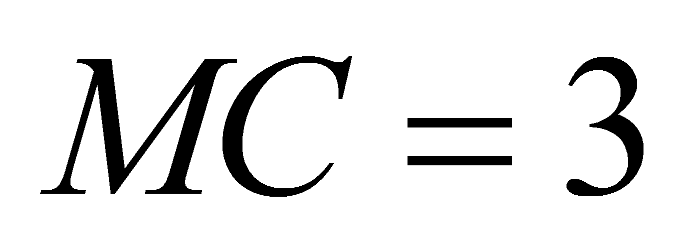
，求 的长；
的长；(2)如果 ，求的长．
，求的长．
15．如图，已知线段 ，
， ，点是的中点．
，点是的中点．
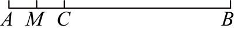
(1)求线段 的长；
的长；
(2)在线段上取一点，使得 ，请画出图形，并求线段的长．
，请画出图形，并求线段的长．
16．如图，已知 三点在同一直线上，
三点在同一直线上， ，点是的中点，点是的中点，求的长．
，点是的中点，点是的中点，求的长．
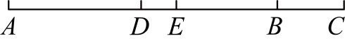
考点03 探究线段数量关系
17．如图，C是线段的中点，D是线段的中点， 与有怎样的数量关系？与有怎样的数量关系？
与有怎样的数量关系？与有怎样的数量关系？
18．线段
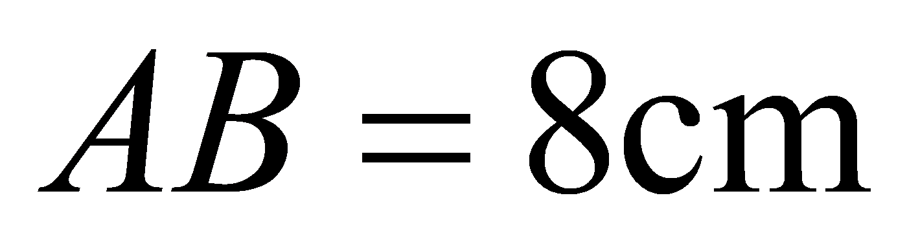
，点在线段上，是线段的中点，是线段的中点．
(1)求线段的长度；
(2)老师说：其它条件不变，无论长度怎么改变，线段和始终满足一个不变的数量关系，请你直接写出来．
19．已知点 ，，，，在同一直线上．
，，，，在同一直线上．
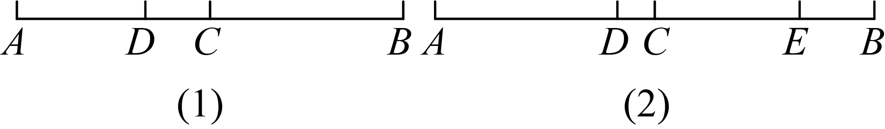
(1)是线段的中点，是线段上的点， ，
，
①如图（1），若 ，求线段的长；
，求线段的长；
②如图（2），是线段上的点，是线段的中点．若，求线段 的长；
的长；
(2)C是线段上一点，是线段的中点．若，直接写出与的数量关系．
20．如图，已知线段 ，在线段上确定两点
，在线段上确定两点 ，使得
，使得 ，
， 分别是线段的中点．
分别是线段的中点．

(1)试分析线段 的数量关系；
的数量关系；
(2)求线段的长度．
21．已知线段，延长至点，使，是线段的中点．

(1)若 ，则求的长；
，则求的长；
(2)试探究线段、间的数量关系，并说明理由．
22．已知，点为线段的中点．

(1)如图1，若 ，点为线段的中点，则________；
，点为线段的中点，则________；
(2)如图2，若点在线段上，且 ，求
，求 的值；
的值；
(3)若 ，点在直线上，且
，点在直线上，且 ，点为的中点，请探究与
，点为的中点，请探究与 之间的数量关系．
之间的数量关系．
23．如图，点C为线段上一点，点M、N分别是线段、的中点，回答下列问题：
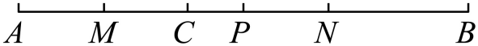
(1)试判断线段与之间的数量关系，并说明理由；
(2)若点P是线段的中点，，，求线段 的长．
的长．
24．如图，点C在线段上，若 ，则称点C是线段的圆周率点，线段
，则称点C是线段的圆周率点，线段 称作互为圆周率伴侣线段．
称作互为圆周率伴侣线段．

(1)若，求的长；
(2)在（1）的条件下，若点D也是图中线段的圆周率点（不同于点C），试求出线段的长，并写出与的数量关系．
考点04 比例相关线段的运算
25．如图，已知，，，四点在同一线段上，线段．
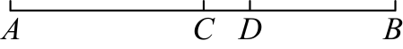
(1)若点是线段的中点，，求线段的长度；
(2)若点满足
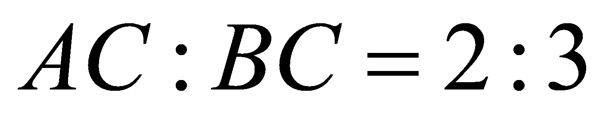
，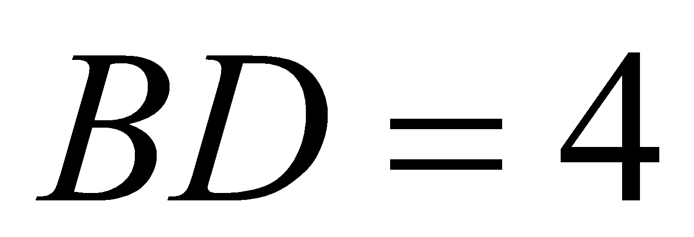
，求线段的长度．26．如图，点E是线段的中点，C是线段上一点， ；
；

(1)若，求的长；
(2)若F为的中点，求 长．
长．
27．如图，已知线段 ，
， ，点M是的中点．
，点M是的中点．

(1)求线段的长；
(2)在线段上取一点N，使得，求线段的长．
28．如图，已知、两点把线段分成
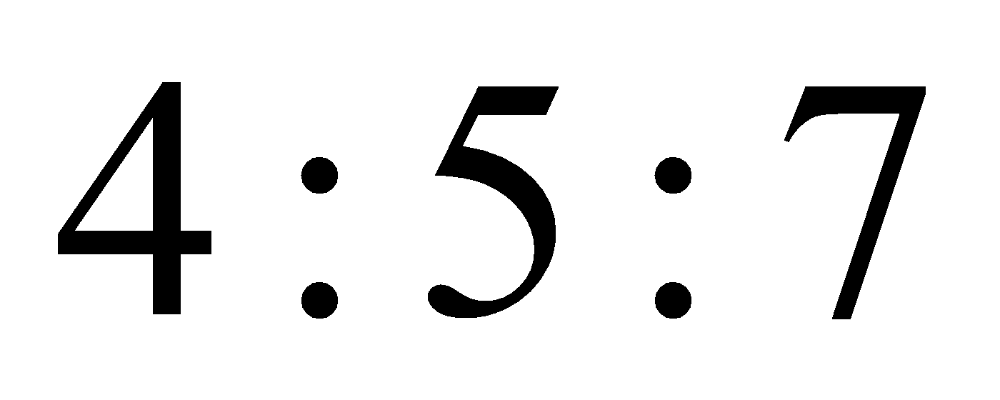
三部分，是线段的中点，．
(1)求 的长；
的长；
(2)点是线段的中点吗？为什么？
29．如图， ，点C在线段上，
，点C在线段上，
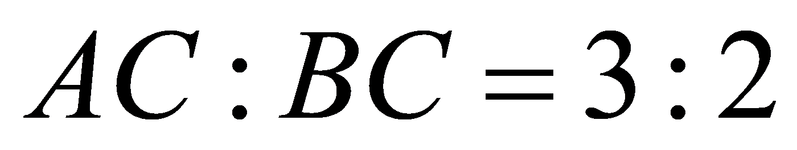
，点M是的中点，点N是的中点．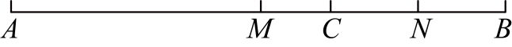
(1)求线段的长；
(2)求线段的长．
30．如图，点C为线段上一点，点D为的中点，点C把线段分成 两部分，且．
两部分，且．

(1)求的长：
(2)若点E在直线上，且
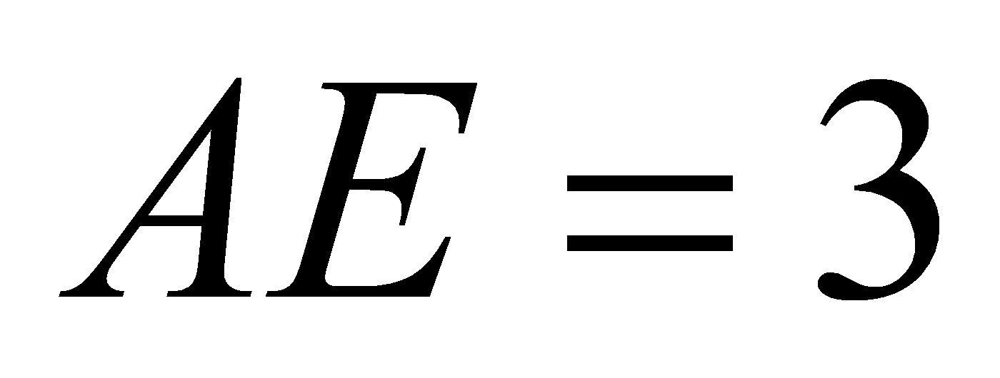
，求的长．31．如图，已知，点C，E在线段上，点 D 为的中点， 
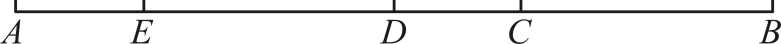
(1)求的长；
(2)若
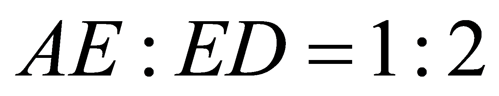
，求的长．32．已知，点C是直线上一点，线段
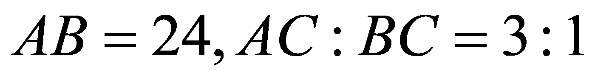
．(1)如图，当点C在线段上时，求的长；
(2)点M，N分别是
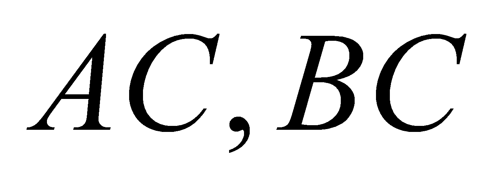
的中点，求线段的长．考点05 线段相关动点定值问题
33．如图，，点C是线段延长线上的动点，在线段上取一点N使得，点M为线段的中点，则
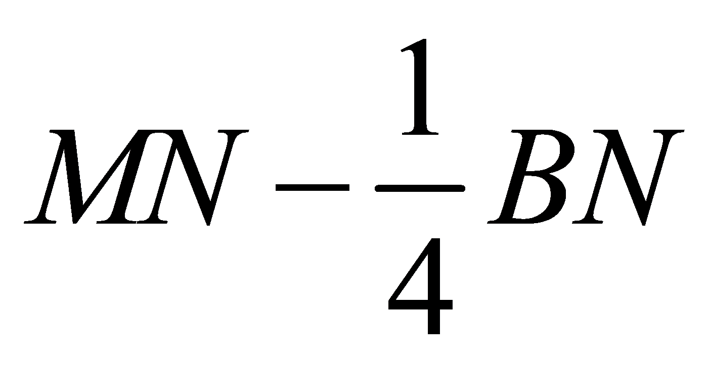
是否是定值？若是，求出这个值；若不是，请说明理由．
34．如图，线段，动点P 从A 出发，以每秒2个单位长度的速度沿射线运动，M 为 的中点．点P的运动时间为x秒．
的中点．点P的运动时间为x秒．

(1)若 时， 求
时， 求 的长；
的长；
(2)当P在线段上运动时， 是定值吗? 如果是，请求出该定值，如果不是，请说明理由；
是定值吗? 如果是，请求出该定值，如果不是，请说明理由；
(3)当P在射线上运动时，N为 的中点， 求的长度．
的中点， 求的长度．
35．如图，已知C，D是线段上两点；E，F两点分别是线段，上的点，且 ，
， ；M，N两点分别是线段，上的点，且
；M，N两点分别是线段，上的点，且
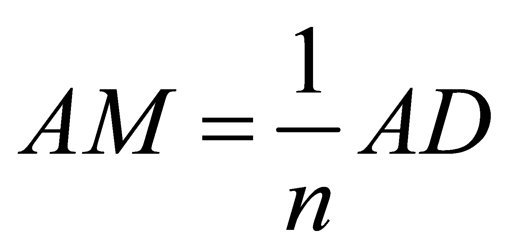
，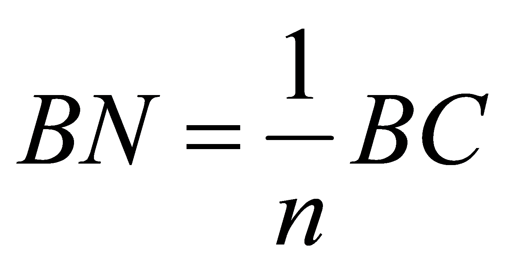
．(1)如图1，已知，
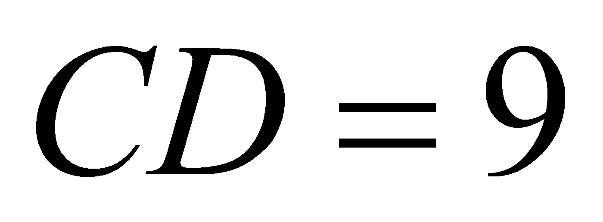
，若 ，请直接写出线段的长度：________；
，请直接写出线段的长度：________；(2)如图2，在（1）的条件下，若 ，求线段和的长度．
，求线段和的长度．
(3)如图3，若 ，下列两个结论，①
，下列两个结论，① 是定值，②
是定值，②
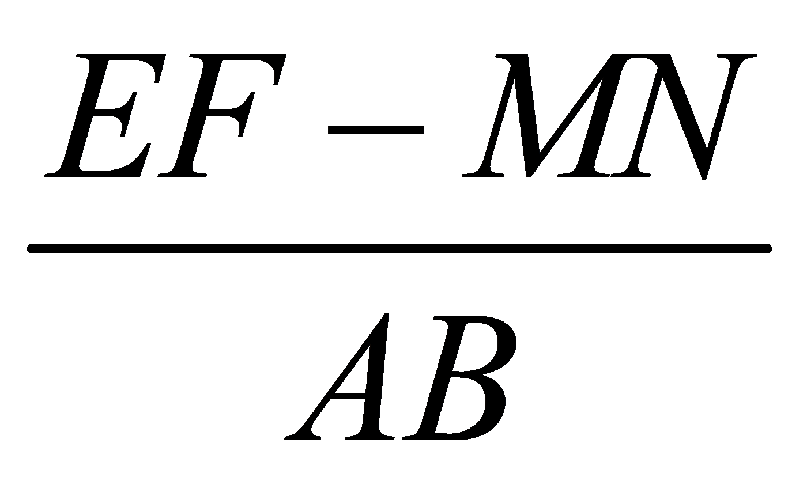
是定值，其中只有一个是正确的，请直接写出正确结论的序号：_______，并直接写出其定值：_______．
36．如图①，已知线段 ，
， ，线段在射线上运动（点A在点B的左侧，点C在点D的左侧），且
，线段在射线上运动（点A在点B的左侧，点C在点D的左侧），且
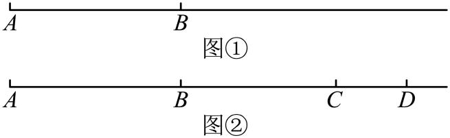
(1)若 ，求的长．
，求的长．
(2)当在线段的延长线上时，如图②所示，若点 分别是线段
分别是线段 的中点，求的长．
的中点，求的长．
(3)当运动到某一时刻，使得点D与点B重合时，若点P是线段延长线上任意一点，请判断 是否为定值，并说明理由．
是否为定值，并说明理由．
37．如图①，已知线段 ，线段在射线上运动（点A在点B的左侧，点C在点D的左侧），且．
，线段在射线上运动（点A在点B的左侧，点C在点D的左侧），且．

(1)若，求的长．
(2)当在线段的延长线上时，如图②所示，若点M，N分别是线段的中点，求的长．
(3)当运动到某一时刻，使得点D与点B重合时，若点P是线段延长线上任意一点，请判断
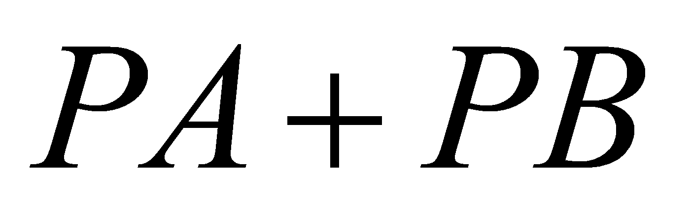
是否为定值，并说明理由．38．如图，已知线段 ，点是线段上任意一点（不与点、重合），点和点分别是线段、的中点．
，点是线段上任意一点（不与点、重合），点和点分别是线段、的中点．

(1)线段是图中哪条线段的长度；
(2)若 ，求线段的长度；
，求线段的长度；
(3)若点为线段的中点，则线段与线段的数量关系是______；
(4)试说明，无论点如何移动，线段的长度为定值，并求出这个定值．
39．【感悟体验】如图 ，
， 三点在同一直线上，点在线段的延长线上，且
三点在同一直线上，点在线段的延长线上，且 ，请仅用一把圆规在图中确定点的位置．
，请仅用一把圆规在图中确定点的位置．
【认识概念】在同一直线上依次有 四点，且，那么称与互为“对称线段”，其中为的“对称线段”，亦为的“对称线段”．
四点，且，那么称与互为“对称线段”，其中为的“对称线段”，亦为的“对称线段”．
如图 ，下列情形中与互为“对称线段”的是 （直接填序号）．
，下列情形中与互为“对称线段”的是 （直接填序号）．
 ；
；
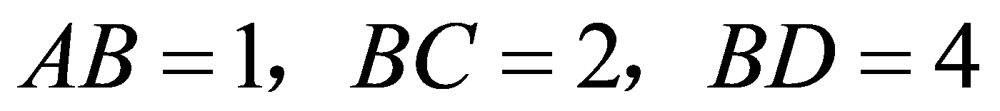
； ．
．【运用概念】如图 ，与互为“对称线段”，点为的中点，点为的中点，且
，与互为“对称线段”，点为的中点，点为的中点，且 ．
．
（1）若 ，求的长；
，求的长；
（2）若，求的长；
【拓展提升】如图 ，在同一直线上依次有四点，
，在同一直线上依次有四点， 且（
且（ 为常数），点为的中点，点在上且．是否存在
为常数），点为的中点，点在上且．是否存在 的值使得的长为定值？若存在，请求出的值以及这个定值（用含的代数式表示）；若不存在，请说明理由．
的值使得的长为定值？若存在，请求出的值以及这个定值（用含的代数式表示）；若不存在，请说明理由．
40．【感悟体验】如图1，A、B、C三点在同一直线上，点D在线段的延长线上，且，请仅用一把圆规在图中确定D点的位置．
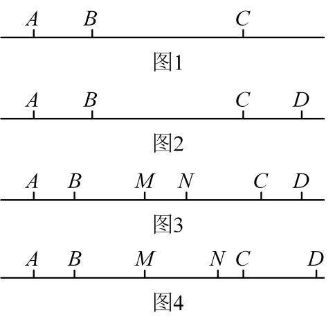
【认识概念】在同一直线上依次有四点，且，那么称与互为“对称线段”，其中为的“对称线段”，亦为的“对称线段”．
如图2，下列情形中与互为“对称线段”的是________（直接填序号）．
①， ；②
；② ，
， ，
，
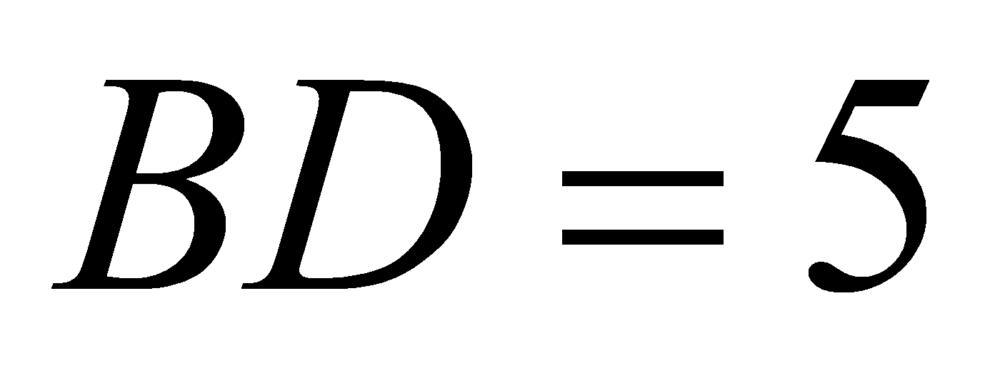
；③ ，
， ．
．【运用概念】如图3，与互为“对称线段”，点M为的中点，点N为的中点，且．
（1）若 ，求的长；
，求的长；
（2）在的长度可以变化的情况下，试说明与互为“对称线段”．
【拓展提升】
（3）如图4，在同一直线上依次有A、B、C、D四点，且（a为常数），点M为的中点，点N在上且．是否存在m的值使得的长为定值？若存在，请求出m的值以及这个定值（用含a的代数式表示）；若不存在，请说明理由．
考点06 线段相关动点存在性问题
41．如图，点A，B，C，D在同一条直线上，且，线段，若在直线上存在一点M使得 ，求线段
，求线段 的长．
的长．

42．如图，点
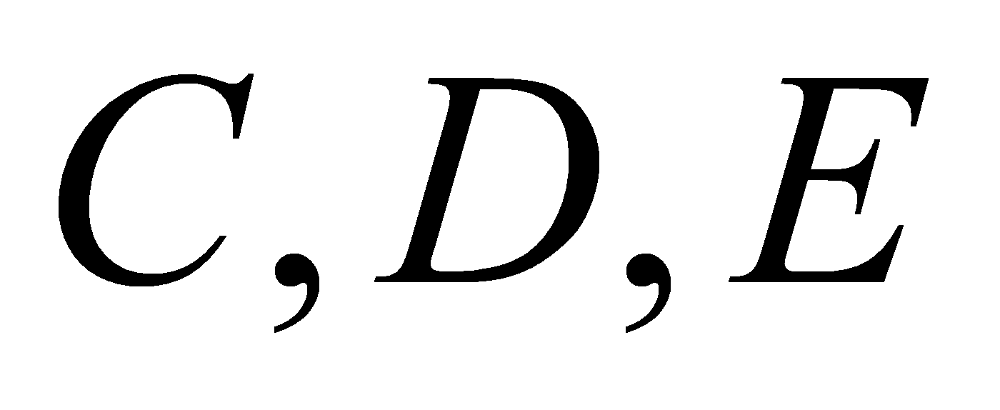
都在直线上，是线段的中点，是线段的中点， ．
．
(1)当点在线段上且 时，求
时，求 和的长．
和的长．
(2)若 是直线上的动点，动点从点A出发，以3个单位长度/秒的速度沿着的方向运动，运动时间为
是直线上的动点，动点从点A出发，以3个单位长度/秒的速度沿着的方向运动，运动时间为 秒．
秒．
①已知另一动点 从点出发，以2个单位长度/秒的速度沿着
从点出发，以2个单位长度/秒的速度沿着
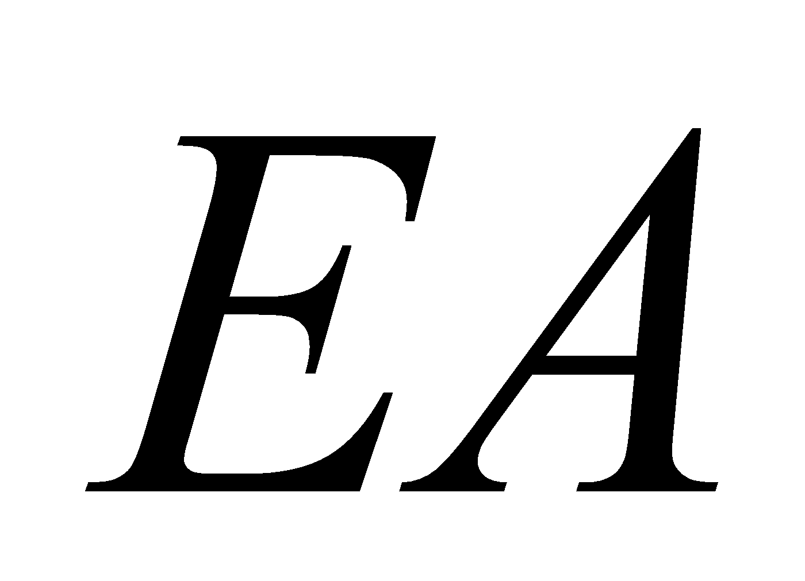
的方向同时运动．是否存在 ？若存在，求出此时运动的时间；若不存在，请说明理由．
？若存在，求出此时运动的时间；若不存在，请说明理由．②当动点在线段上运动时，分别是线段和的中点，试判断 与线段之间的数量关系，并说明理由．
与线段之间的数量关系，并说明理由．
43．如图，线段 ，A是线段的中点，B是线段
，A是线段的中点，B是线段 的中点．
的中点．
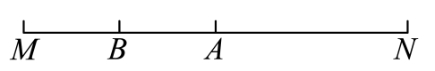
(1)求线段 的长．
的长．
(2)若线段上存在一点C位于点A的右侧，且 ，求
，求 的长．
的长．
44．如图，已知线段，点是的中点，点是的三等分点，且点在点的右边．

在线段上是否存在一点，使得点是的中点，同时点也是的中点？若存在，请用圆规找出点E的位置，并说明理由；若不存在，请说明理由．
45．点在线段上，在线段
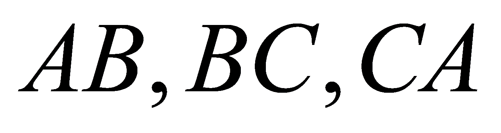
中，若有一条线段的长度恰好是另一条线段长度的一半，则称点为线段的“半分点”．
(1)当点是线段的中点时，点______线段的“半分点”（填“是”或“不是”）；
(2)已知 ，若点为线段的“半分点”，求线段的长度；
，若点为线段的“半分点”，求线段的长度；
(3)已知点
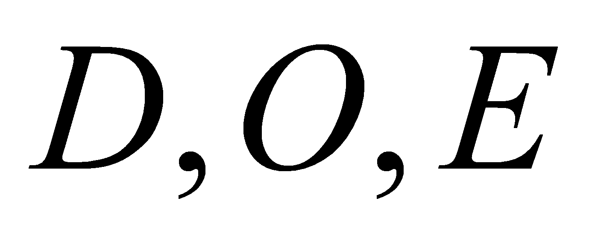
是数轴上互不重合的三个点，点 为原点，点表示的数是
为原点，点表示的数是 ，若存在这三个点中，一个点是另外两个点为端点的线段的“半分点”，求点表示的数的最大值与最小值的差（用含的式子表示）．
，若存在这三个点中，一个点是另外两个点为端点的线段的“半分点”，求点表示的数的最大值与最小值的差（用含的式子表示）．46．如图，点C在线段AB上， ，点D、E分别是AB和CB的中点，
，点D、E分别是AB和CB的中点， ，
， .
.
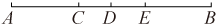
(1)求线段CD，DE，AB的长；
(2)是否存在点M，使它到A，C两点的距离之和等于8cm，为什么？
(3)是否存在点M，使它到A，C两点的距离之和大于10cm？如果点M存在，点M的位置应该在哪里？为什么？这样的点M有多少个？
47．如图，已知线段 ，若点M以每秒2个单位的速度由A向B运动，同时，点N以每秒3个单位的速度由B向A运动，当某个点到达终点时，另一个点也停止运动．E，F分别为和的中点．设运动时间为t．
，若点M以每秒2个单位的速度由A向B运动，同时，点N以每秒3个单位的速度由B向A运动，当某个点到达终点时，另一个点也停止运动．E，F分别为和的中点．设运动时间为t．

(1)当M，N两点相遇时，求线段的长；
(2)当t为何值时，线段的长为线段的 ；
；
(3)在运动过程中，E，F的距离是否存在最短？若存在，请直接写出线段的长．若不存在，请说明理由．
48．已知线段
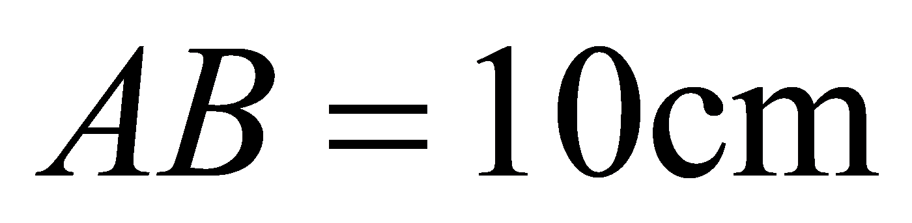
， ．
．（1）线段AC的长度能否确定？若能确定，请求出AC的长度；若不能，请说明理由；
（2）是否存在使A、C之间距离最短的情形？若存在，请求出AC的长度，若不存在，请说明理由；
（3）你能比较AB+BC与AC的大小吗？说说你的理由．